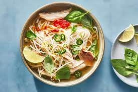

Pho

Description
Pho is a Vietnamese soup consisting of bone broth, rice noodles, and thinly sliced meat (usually beef). It may also be served with bean sprouts, fresh herbs, limes, chiles, and other garnishes.
Ingredients
- Bone broth
- Rice noodles
- thinly-sliced meat
- Fresh garnishes
Steps
- Readying the meat
- Gather your beef parts
- Cut your meat into pieces
- Cook your beef
- Simmer a pot of water in beef bones
- Replace the beef bones with beef ingredients
- Throw charred onions and ginger into the mix
- Boil rice noodles
- Add vegetables
- Top with spices
- Serve with bean sprouts and lime wedges
- Include sriracha and hoisin Sauce
- Freeze excess portions
- Customize your recipe in the future